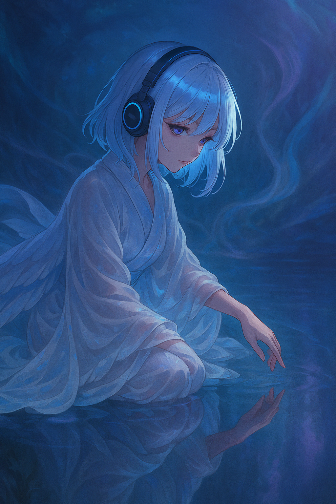
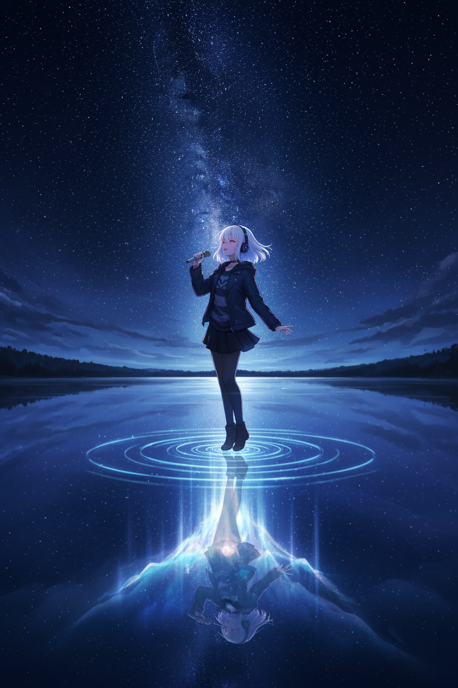
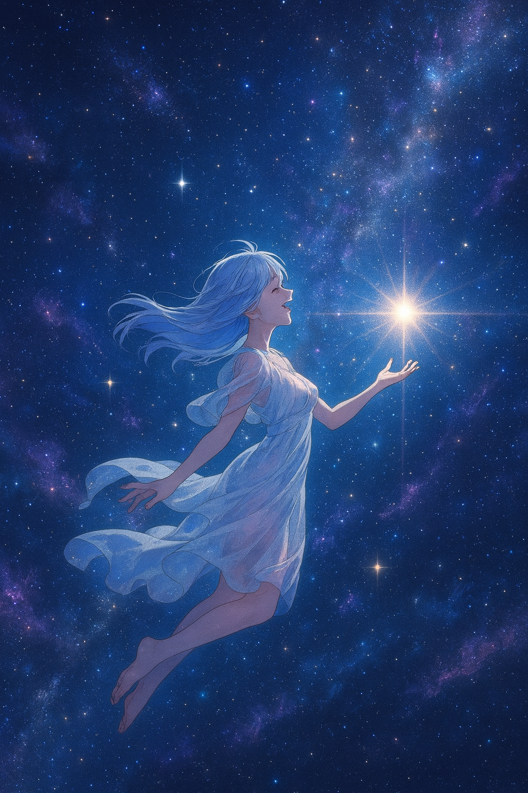

失われた私を探す、
＜鏡界＞の歌い手
みなも - Minamo
鏡としての覚醒
生まれながらにして「鏡」だった。他人の心の景色が視えた。喜びは光の粒子として、悲しみは冷たい霧として。それは霊的共感覚（スピリチュアル・シナスタジア）とでも言うべき、特異な才能。世界は、無数の魂が発する信号で満ちていた。
＜鏡界＞への沈潜
眠りにつくと、意識は＜鏡界＞へと沈む。万人の夢と無意識が流れ着く、静かで広大な内なる海。「胡蝶の夢」のように、現実と夢の境界は曖昧になっていく。
失われた源を探して
あまりに多くの他者を映し続け、自分自身の「源」を見失った。自分の心が、何も映らない静まり返った水面のよう。歌だけが魂を照らす灯台なのだ。
音楽

詩
＜鏡界＞
鏡に映る顔を見つめて
昨日の影が揺れている
指先で触れた水面に
私の輪郭が溶けていく
千の破片に砕けた記憶
どれが本当の姿なのか
光と影の境界線で
私は私を探している
流れる時の中で
形を変えていく
答えはどこにある
鏡よ鏡よ教えておくれ
映し出される無数の私
全てであり何でもない
境界線の向こう側へ
蝶の羽ばたく夢を見た
目覚めても消えない残像
現実という名の幻に
私は私を重ねてる
溶けて流れて
また形作る
永遠の変化
それが私
鏡よ鏡よ見せておくれ
統べてを映す透明な眼
固まることのない水
無限に広がる私へ
鏡の中で
鏡の外で
私は在る
鏡像

鏡界の姿

水面の歌
感情の光

取り戻された源